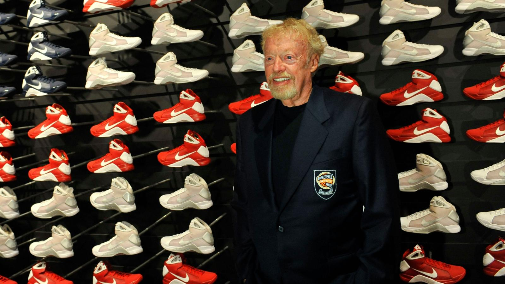

Phil Kinght

.Hiện nay, các trường kinh doanh thường có một nguồn vốn hỗ trợ cho các sinh viên học bằng Thạc sĩ Quản trị kinh doanh (MBA) có ý tưởng kinh doanh xuất sắc. Bằng cách này, các trường kinh doanh đã tạo ra hàng ngàn doanh nhân với kế hoạch kinh doanh ấn tượng hằng năm. Nhưng vào thời điểm năm 1962, chỉ có một vài sinh viên xuất sắc rời trường với tấm bằng MBA và có một kế hoạch kinh doanh cụ thể. Phil Knight là một trong số đó.
Khi còn học tại Trường Kinh doanh Stanford, Knight đã tìm thấy cảm hứng trong một lớp học tiểu thương. Lớp học này đã làm thay đổi cả cuộc đời ông. Ông là một sinh viên không có gì nổi bật trong suốt những năm tháng học ở Đại học Oregon, nơi ông theo học chuyên ngành báo chí. Nhưng sau khi trở về từ Quân đội, ông đăng ký theo học ở Stanford và được chấp nhận.
Năm học thứ hai, Knight đăng ký vào lớp học của Giáo sư Frank Shallenberger, người được xem là “cha đẻ của ngành kinh doanh nhỏ lẻ”. Các nghiên cứu chủ yếu của Giáo sư Shallenberger là về các vấn đề của các công ty khởi nghiệp và các tiểu thương, trong khi hầu hết các giáo sư khác đều quan tâm đến các tập đoàn lớn. Khi tham gia vào lớp học của vị giáo sư này, Knight đã có cơ hội sử dụng trí tưởng tượng của mình và nảy ra ý tưởng cho Nike sau này để trở thành một trong những công ty thành công nhất trong lịch sử kinh doanh.
Bài tập của Giáo sư Shallenberger giao cho các sinh viên cũng giống như kiểu bài tập của một người học báo chí được yêu cầu viết bản thông cáo: Ông yêu cầu sinh viên của mình lập kế hoạch kinh doanh, miêu tả mục đích và lập kế hoạch truyền thông, tiếp thị cho ý tưởng kinh doanh đó. Knight không chỉ trình bày một ý tưởng kinh doanh mà ông còn đặt ra một câu hỏi đơn giản nhưng cực kỳ thú vị: “Liệu giày thể thao của Nhật Bản có thể thắng giày thể thao của Đức như cách máy ảnh Nhật đánh bại máy ảnh của Đức không?” Bài viết của ông trình bày về kế hoạch sản xuất giày thể thao cao cấp tại Nhật Bản, nơi có chi phí lao động thấp hơn rất nhiều so với Đức hay Mỹ. Nói cách khác, Knight đã nhìn thấy trước khả năng một mô hình sản xuất giày khác biệt sẽ thay đổi thị trường lúc bấy giờ.
Nhắc lại việc này, Knight đã chia sẻ như sau: “Lớp học đó là khoảnh khắc giác ngộ của tôi. Đầu tiên, Giáo sư Shallenberger định nghĩa ai sẽ trở thành một doanh chủ – và tôi nhận ra ông ấy đang nói về kiểu người như tôi. Tôi còn nhớ sau khi làm bài tập, tôi đã nhủ thầm: đây chính là điều mà tôi muốn làm.”
Cha của Knight, một luật sư và đồng thời cũng là tổng biên tập của một tờ báo ở Portland, Oregon, lại có suy nghĩ khác con trai mình. Ông muốn con trai có được một công việc “đúng nghĩa” trong một công ty tài chính. Knight chấp nhận nhưng trước khi bắt đầu vị trí của một kế toán viên, ông quyết định tiếp tục tìm hiểu ý tưởng của mình trong bài luận mà ông từng viết. Ông bay tới Nhật Bản và hoàn toàn bị chinh phục bởi cách người Nhật làm kinh tế cũng như trước văn hóa của họ. Trong suốt chuyến đi vào tháng 11 năm 1962, Knight đã dừng lại ở Kobe, nơi ông phát hiện ra nhãn hiệu giày Tiger của Công ty Onitsuka Tiger. Sản phẩm của công ty này đã đánh bại loại giày đắt tiền hơn do Adidas sản xuất.
Knight hết sức ấn tượng về chất lượng cao và chi phí thấp của những đôi giày Tiger. Ông tìm cách nói chuyện với ông Onitsuka – giám đốc công ty. Trước khi từ biệt, Knight đã thuyết phục thành công vị giám đốc này để giày Tiger được bán ở thị trường Mỹ. Chuyến hàng đầu tiên từ Onitsuka cập bờ nước Mỹ vào tháng Một năm 1964 và Knight gửi luôn hai đôi cho huấn luyện viên cũ của ông ở Đại học Oregon là Bill Bowerman. Bowerman là huyền thoại của ngôi trường này. Ông từng là vận động viên đội tuyển Olympic, sau trở thành huấn luyện viên đội tuyển Olympic và là người thầy truyền cảm hứng cho rất nhiều thế hệ vận động viên môn điền kinh. Từ năm 1960, ông Bowerman đã từng tự tay làm ra những đôi giày cho các vận động viên của mình để giúp họ có thêm lợi thế trong các cuộc chạy đua. Knight từng tham gia trong đội chạy cự ly trung bình của Bowerman, nên ông rất hy vọng sẽ nhận được sự ủng hộ của vị huấn luyện viên cũ để ông bán được loại giày nhập khẩu mới này.
Bowerman không chỉ ủng hộ mà còn muốn trở thành đối tác của Knight. Ông đề xuất một số ý tưởng thiết kế để có giày chạy chất lượng tốt hơn. Mỗi bên cùng đầu tư 500 đô-la và hợp tác thành lập Blue Ribbon Sports vào tháng 1 năm 1964. Đối với Knight, đây chỉ là công việc phụ khi ông làm ở công ty tài chính. Nhưng ba tháng sau, khi chuyến hàng đầu tiên chở 300 đôi giày cập bến, chúng được bán hết chỉ trong vòng ba tuần. Trong năm đầu tiên, công ty đã thu được lợi nhuận 3.240 đô-la.
Thời gian đầu, Knight thường lái chiếc xe Plymouth Valiant màu xanh lá cây của ông tới các cửa hàng địa phương ở các bang trong vùng Tây Bắc nước Mỹ để bán giày chạy bộ Tiger. Có lúc, ông đứng bán giày trong tầng hầm ngôi nhà của cha mình. Đến năm 1969, doanh số của giày Blue Ribbon cán mốc một triệu đô-la. Knight quyết định từ bỏ việc giảng dạy môn kế toán ở Đại học Portland và không bao giờ quay trở lại con đường này nữa. Năm 1972, Bowerman và Knight bắt đầu sản xuất mẫu giày của riêng họ. Bowerman sử dụng khuôn làm bánh quế của vợ ông để làm ra một đôi giày có độ bám đường tốt hơn những mẫu giày đang có trên thị trường. Knight chia sẻ: “Chúng tôi muốn tạo ra những đôi giày mà mọi vận động viên điền kinh đều muốn có.”
Blue Ribbon (Ruy-băng xanh) là một cái tên phù hợp với một doanh nghiệp nhập khẩu giày nhưng lại không đủ độ hấp dẫn để trở thành thương hiệu cho một nhãn giày chạy bộ. Vì vậy, Knight nghĩ ra cái tên Dimension Six. Nhưng cái tên này cũng không có gì ấn tượng. Thay vào đó, một người bạn của Knight là Jeff Johnson, vốn là vận động viên điền kinh và cũng là nhân viên đầu tiên của công ty ông sau này, đã đề xuất cái tên xuất hiện trong giấc mơ của mình: Nike – tên một nữ thần có cánh tượng trưng cho chiến thắng trong thần thoại Hy Lạp.
“Chúng tôi đã có một cái tên. Điều tiếp theo là chúng tôi cần có biểu tượng cho đôi giày”, Knight kể lại. “Năm 1971, Ford đã chi hai triệu đô-la cho việc thiết kế biểu tượng. Chúng tôi không có hai triệu đô-la, nên tôi đến một cửa hàng thiết kế đồ họa ở Portland và gặp một cô gái trẻ ở đó. Cô gái ấy than thở: “Tôi không biết làm sao kiếm đủ tiền để may một chiếc váy đi dự lễ hội đây.” Và tôi đề nghị cô ấy làm việc cho mình với số tiền công hai đô-la/giờ. Cô ấy nhận được 35 đô-la cho 17,5 giờ làm việc. Đó là người đã thiết kế ra biểu tượng (swoosh) của Nike ngày nay.
Năm 1972, Knight kết thúc giai đoạn làm người nhập khẩu giày bằng việc chính thức tự sản xuất giày chạy bộ được Bowerman thiết kế với thương hiệu Nike ở Mexico. Công ty chính thức được khởi động. Năm 1972, họ bán được 3,2 triệu đô-la. Một năm sau, Knight ký hợp đồng tài trợ đầu tiên với ngôi sao quần vợt người Romania – Ilie Nastase. Trong mười năm tiếp theo, lợi nhuận của Nike tăng gấp đôi mỗi năm. Khi Nike trở thành công ty đại chúng năm 1980, nó đã vượt qua Adidas và trở thành công ty đi đầu trong lĩnh vực sản xuất giày thể thao. Năm 1984, Knight thuyết phục được ngôi sao bóng rổ trẻ Michael Jordan làm đại sứ cho nhãn giày thể thao mới và ngay lập tức công ty đã trở thành một hiện tượng tiếp thị. Knight nhận định: “Anh ấy là một cầu thủ cừ khôi, đẹp trai, hoạt ngôn và có học thức. Nói chung, anh ấy thật sự hoàn hảo. Chúng tôi được một trung tâm môi giới quảng cáo giới thiệu và ngay lập tức chúng tôi đã thích anh ấy.”
Nhưng ông cũng thừa nhận mình đã gặp may. “Chúng tôi không hề có kế hoạch từ trước. Chúng tôi nhận ra anh ấy là một chàng trai hấp dẫn, có bước nhảy cực tốt và cực kỳ tài năng. Nhưng không ai biết trước anh ấy sẽ trở thành một trong những hiện tượng của nền văn hóa Mỹ.”
Michael cũng trở thành biểu tượng của Nike. Sự thành công của Michael kéo theo một chiến dịch quảng cáo đã thay đổi toàn bộ công ty. Ngày nay, doanh thu hằng năm của Nike là 19 tỷ đô-la và công ty có hơn 36 nghìn nhân viên ở khắp nơi trên thế giới, trong đó có bảy nghìn người làm việc tại trụ sở ở Beaverton, bang Oregon. Knight vẫn đang là Chủ tịch Hội đồng quản trị của công ty.
Về việc trở thành vận động viên điền kinh và gặp gỡ người bạn đồng sáng lập công ty
Cho đến năm 14 tuổi, tôi vẫn nghĩ mình sẽ trở thành ngôi sao bóng chày chuyên nghiệp. Việc bị loại khỏi đội bóng chày ở trường cấp ba đã làm tôi cay đắng tỉnh ngộ và quyết định chuyển sang môn điền kinh khi vào đại học.
Từ đó, tôi bắt đầu để ý đến giày. Vào thời điểm đó, giày chạy của Mỹ thường do các công ty chuyên làm lốp xe thực hiện. Mỗi đôi có giá khoảng năm đô-la và sau một vòng chạy khoảng 8km, chân bạn sẽ bị chảy máu. Một thời gian sau, các hãng giày của Đức xuất hiện cùng những mẫu giày thoải mái hơn rất nhiều với giá 30 đô-la. Nhưng thầy Bowerman vẫn không hài lòng. Thầy tin rằng nếu có một đôi giày tốt, kết quả thi đấu của các vận động viên sẽ tốt hơn. Thế là thầy Bowerman tự làm ra giày chạy và tôi được chọn là người thử những đôi giày mới vì tôi không phải vận động viên xuất sắc nhất trong đội.
Thầy Bowerman là một thủ lĩnh vĩ đại và là một người tuyệt vời. Được làm việc với thầy luôn là ước mơ của tôi. Thầy luôn biết cách chỉ bảo bạn đối mặt với các thách thức như thế nào. Khi tham gia vào đường đua, bạn phải chuẩn bị tinh thần thật tốt, tốt hơn mức bạn nghĩ và sẵn sàng đón nhận cả thành công cũng như thất bại.
Về việc trở thành doanh nhân khởi nghiệp với số vốn ít ỏi
Chúng tôi không có kế hoạch lớn nào cả mà cứ vừa làm vừa suy nghĩ tiếp thôi. Chúng tôi không thể ổn định mọi thứ ngay từ đầu vì không có đủ tiền. Chúng tôi quảng cáo tiếp thị theo kiểu tự phát và đến bây giờ vẫn có một phần hoạt động tiếp thị làm theo kiểu này. Nhưng vì chúng tôi đã trở thành một công ty dẫn đầu ngành nên chúng tôi cần điều chỉnh văn hóa làm việc và đã trở nên có tổ chức hơn.
Về việc kinh doanh trong lĩnh vực thể thao
Chúng tôi không làm trong ngành thời trang như tờ Thời báo Phố Wall có lần đã nhận định trong một bài viết. Chúng tôi hoạt động trong lĩnh vực thể thao. Đó là sự khác biệt rất lớn. Thể thao giống như dòng nhạc Rock & Roll vậy. Theo tôi, cả hai đều là những yếu tố văn hóa nổi bật; đều là thứ ngôn ngữ quốc tế và tràn đầy yếu tố xúc cảm.
Về việc gắn bó với vận động viên đánh golf Tiger Woods sau những vụ lùm xùm
Vận động viên thể thao cũng là con người và có thể mắc lỗi. Chúng tôi đã biết Tiger trong suốt 18 năm và làm việc với anh ấy trong 15 năm, trong đó có khoảng thời gian ba năm anh ấy đã không giữ đúng lời cam kết vì những vụ lùm xùm của anh ấy. Nhưng anh ấy đã xin lỗi công ty và tất cả những người liên quan. Chúng tôi nghĩ rằng bản chất Tiger Woods là người rất tốt và mọi người cuối cùng sẽ nhận ra điều đó.
Về việc là người dẫn đầu trước các đối thủ
Đôi khi tôi thấy sởn gai ốc khi nhìn vào vị thế hiện tại nhưng bạn không nên mất thời gian vào việc đó. Cứ sáu tháng lại là một cuộc chơi mới nên điều bạn cần lo lắng là làm sao để đi trước đối thủ. Nếu bạn mất thời gian để tự mãn về một điều gì đó, bạn sẽ sớm bị qua mặt.
Về tầm quan trọng của việc tiếp thị
Trong nhiều năm, chúng tôi luôn nghĩ mình là một công ty chú trọng đến sản phẩm, tập trung toàn bộ vào thiết kế và sản xuất. Nhưng chúng tôi đã hiểu ra rằng khâu quan trọng nhất đối với công ty là tiếp thị sản phẩm. Nike là công ty tập trung vào tiếp thị và sản phẩm chính là công cụ tiếp thị quan trọng nhất. Quảng cáo, tiếp thị là khâu liên kết toàn bộ công ty lại với nhau. Yếu tố thiết kế và các đặc tính của sản phẩm chỉ là một phần của toàn bộ quy trình tiếp thị.
Chúng tôi từng cho rằng mọi chuyện bắt đầu từ phòng thí nghiệm sản phẩm. Giờ thì chúng tôi nhận ra mọi chuyện đều xoay quanh người tiêu dùng. Công nghệ đúng là rất quan trọng nhưng người dùng mới là nhân tố quyết định sự đổi mới. Chúng tôi đổi mới vì những lý do cụ thể đến từ thị trường. Nếu không, sản phẩm chúng tôi làm ra đều sẽ đưa hết vào bảo tàng.
Về việc thấu hiểu khách hàng
Vào những ngày đầu tiên, khi chúng tôi chỉ là một công ty bán giày chạy, các nhân viên đều là vận động viên môn chạy bộ, nên chúng tôi hiểu rất rõ về khách hàng của mình. Không có trường lớp nào dạy về giày, vậy thì bạn kiếm đâu ra nhân viên cho một công ty chuyên sản xuất và tiếp thị giày chạy? Chính là từ đường đua. Đó là cách làm việc hợp lý và hiệu quả. Chúng tôi và khách hàng là một. Khi chúng tôi bắt đầu sản xuất giày cho vận động viên bóng chày, quần vợt và bóng đá, chúng tôi cũng làm điều tương tự như khi sản xuất giày chạy bộ. Chúng tôi làm quen những vận động viên giỏi nhất trong các lĩnh vực và làm tất cả những gì có thể để hiểu được nhu cầu của họ, từ góc độ kỹ thuật và thiết kế. Các kỹ sư và đội ngũ thiết kế dành rất nhiều thời gian để trò chuyện với các vận động viên để hiểu họ cần gì từ đôi giày về cả mặt thẩm mỹ và các tính năng.
Cách làm này vẫn hiệu quả nhưng chúng tôi đã thiếu đi một số yếu tố quan trọng. Mặc dù chúng tôi vẫn làm ra những sản phẩm tốt và có các chiến dịch quảng cáo tuyệt vời nhưng doanh thu vẫn giậm chân tại chỗ.
Tuy nhiên, chúng tôi đã bỏ qua một nhóm khách hàng đặc biệt quan trọng. Từ trước đến nay chúng tôi chú trọng vào các vận động viên đỉnh cao. Trong kim tự tháp khách hàng của chúng tôi, những vận động viên đỉnh cao sẽ nằm trên cùng, nhóm ở giữa là những người chơi thể thao vào cuối tuần và những khách hàng còn lại sẽ ở nhóm cuối. Mặc dù 60% khách hàng của chúng tôi là những người không thực sự chơi thể thao nhưng tất cả những gì chúng tôi làm là nhắm tới nhóm khách hàng trên cùng. Chúng tôi cho rằng nếu có thể chinh phục nhóm khách hàng này, chúng tôi sẽ có hết những người còn lại vì những vận động viên có thể giúp chứng minh sản phẩm của chúng tôi thực sự tốt.
Nhưng đó là một suy nghĩ quá đơn giản. Tất nhiên việc có được nhóm khách hàng trên cùng vô cùng quan trọng nhưng bạn cũng phải trò chuyện với tất cả những người khác nữa. Lấy ví dụ đơn giản là màu sắc của chiếc giày. Chúng tôi từng không quan tâm đến chuyện này. Nếu cầu thủ siêu sao như Michael Jordan thích sự kết hợp giữa màu vàng và da cam, chúng tôi sẽ chọn màu đó, thậm chí cả khi những người khác không thích chúng. Một trong những đôi giày chạy tốt nhất của chúng tôi là đôi Sock Racer được thiết kế với màu vàng sáng và nó thất bại chỉ vì không ai thích màu đó.
Dù bạn nói chuyện với nhóm khách hàng chủ lực hay một người trên phố, nguyên tắc chỉ có một: Bạn phải làm ra những sản phẩm người ta muốn và bạn cần có các kênh thông tin để hiểu họ muốn gì. Để hiểu được nhóm còn lại của tháp khách hàng, chúng tôi phải nghiên cứu chi tiết thị trường. Chúng tôi đến các trung tâm thể thao nghiệp dư, các phòng tập và sân quần vợt để trò chuyện với mọi người. Chúng tôi đảm bảo rằng mọi sản phẩm làm ra đều hoạt động tốt, dù nó được thiết kế cho Michael Jordan hay một anh chàng Mỹ tên Joe nào đó. Chúng tôi không thể nói với nhau rằng vì Michael đi đôi giày này nên Joe cũng sẽ đi nó.
Về sự thành công.
Chúng tôi biết lĩnh vực này đang ngày càng phát triển. Chúng tôi không biết được liệu công ty của mình có tiếp tục thành công như hiện nay hay không. Chúng tôi chỉ làm việc vì tình yêu từ những ngày đầu tiên và cho đến bây giờ vẫn vậy. Đây là một ngành sản xuất tuyệt vời và những người làm trong ngành đều yêu công việc của họ. Thể thao, sức khỏe và một sân chơi quốc tế – đó là những gì tôi muốn nói về ngành này.
Về việc gia công sản phẩm ở một quốc gia khác.
Cách chúng tôi kinh doanh không khác đối thủ là bao. Nhưng chúng tôi lớn hơn họ, được nhiều người biết đến hơn, vì vậy chúng tôi cũng nhận nhiều lời chỉ trích hơn. Tiền không phải là động lực chính của tôi. Tôi không còn làm việc vì tiền nữa vì tôi đã kiếm đủ rồi. Điều tôi muốn làm trước khi tôi đi đến nhà máy giày lớn nhất trên thiên đường đó là biến Nike trở thành công ty tốt nhất có thể. Tôi tin rằng người Mỹ không muốn sản xuất giày. Đó không phải là tham vọng của họ. Họ không muốn trở thành những người thợ làm giày.